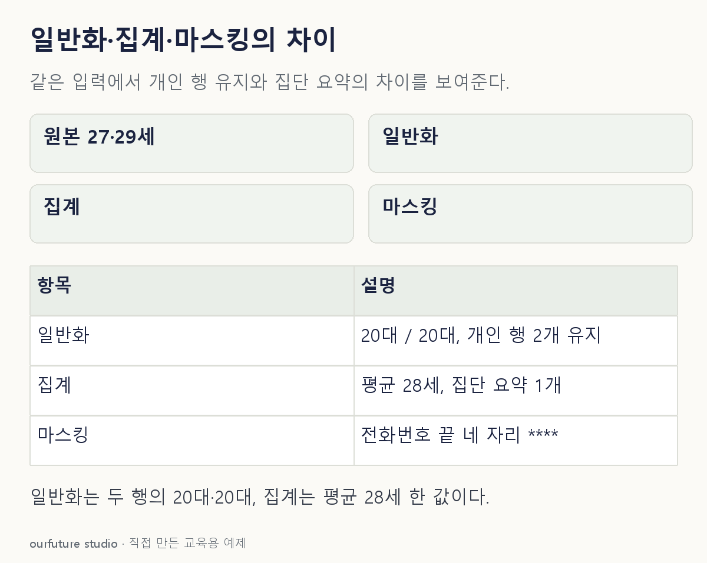

핵심 이론
일반화는 27세를 20대로 바꾸듯 구체적인 값을 더 넓은 범주로 표현한다. 집계는 여러 사람의 값을 묶어 평균이나 합계와 같은 요약값으로 제시한다. 마스킹은 전화번호의 일부 자리를 별표로 가리는 것처럼 일부 표현을 숨긴다.
처리 전후의 자료 단위도 확인한다. 개별 행의 나이를 연령대로 바꾸면 행은 남고 값의 세밀함이 줄어든다. 지역별 평균만 공개하면 원래의 개인별 행 대신 집단 요약이 나온다. 같은 “값을 묶는다”는 말만 읽으면 이 차이를 놓치기 쉽다.
세 처리는 정보 손실과 분석 목적에 미치는 영향이 다르다. 평균만 남기면 분포의 개별 차이를 다시 계산할 수 없고, 연령대로 바꾸면 정확한 한 살 차이 비교가 불가능하다. 처리 이름 자체가 재식별 위험의 제거를 보장하지 않으므로 남은 정보와 공개 범위를 확인한다.
작은 예제로 확인하기
자체 입력은 두 사람의 나이 27세, 29세다.
| 출력 | 설명 |
|---|---|
| 각 행을 20대로 표시 | 일반화 |
| 두 사람 평균 28세만 표시 | 집계 |
| 전화번호 끝 네 자리 가림 | 마스킹 |
평균 28세는 두 값을 더한 56을 사람 수 2로 나눈 결과다. 20대라는 표시는 평균 계산 결과가 아니다. 27세와 29세를 각각 20대로 바꾸면 두 사람의 두 행은 남는다. 평균 28세만 공개하면 두 행을 한 집단 요약으로 바꾼다. 두 방식 모두 상세 정보가 줄지만, 앞의 출력만으로 정확한 평균 28세를 복원할 수는 없다. 전화번호 일부를 가린 출력 역시 평균이나 연령 범주와 다른 연산이다.
그림으로 확인하기

직접 고르기
각 개인 행의 나이 27세·29세를 모두 “20대”로 바꿨다.
주된 처리는?
- 1. 집계 평균 산출
- 2. 일반화
- 3. 무작위 표본 추출
- 4. 회귀 예측
정답과 오답의 이유 확인하기
정답 2번 — 일반화
개별 값을 더 넓은 연령 범주로 바꾸었으므로 일반화다.
- 1번은 여러 행을 하나의 평균으로 요약하는 처리이며 여기서는 각 행이 남는다.
- 3번은 일부 관측치를 선택하는 일이다.
- 4번은 입력에서 결과를 예측하는 일이다.
조건 하나 바꾸어 풀기
개인 행을 공개하지 않고 두 사람 평균 28세만 제시하면?
풀이: 집계다.
개별 값의 범주를 넓힌 것이 아니라 여러 사람의 값을 하나의 집단 요약으로 바꾸었다.
다시 떠올릴 단서
넓히기·요약하기·가리기의 출력을 비교한다.
근거와 적용 조건
- NIST SP 800-188: De-Identifying Government Datasets — Abstract: 준식별자 변환, 재식별 위험, 공개 방식과 활용 목적의 사전 평가. 확인일 2026-10-30.
상황·수치·보기·조건 변경은 자체 교육 예제다. 민간 복원 문항의 공식 정답이나 실제 성능·학습 효과를 뜻하지 않는다.
읽은 내용을 적용해 보기
처리 연산을 비교하는 자체 자료다. 출력만으로 법적 익명성이나 재식별 방지를 판정하지 않는다.